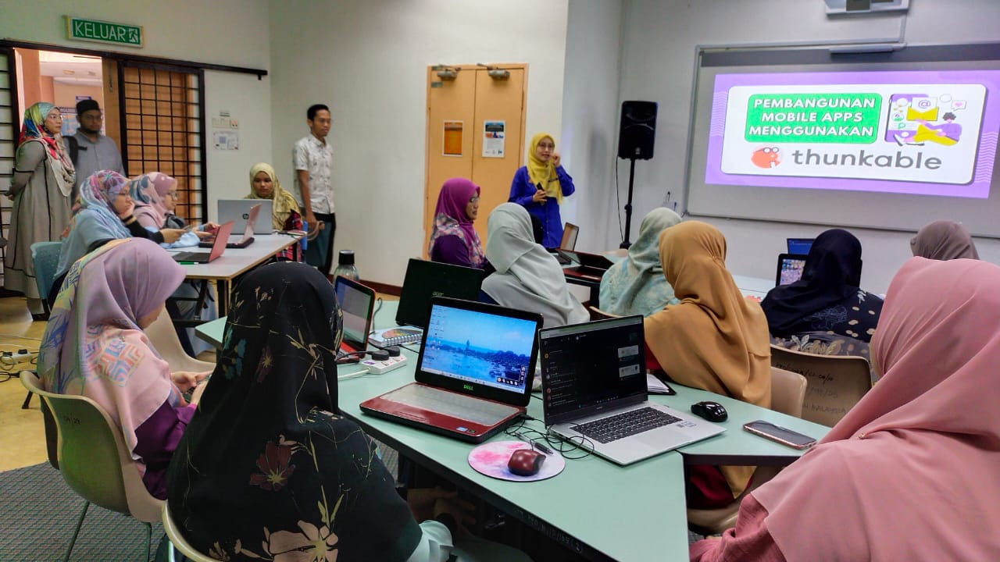
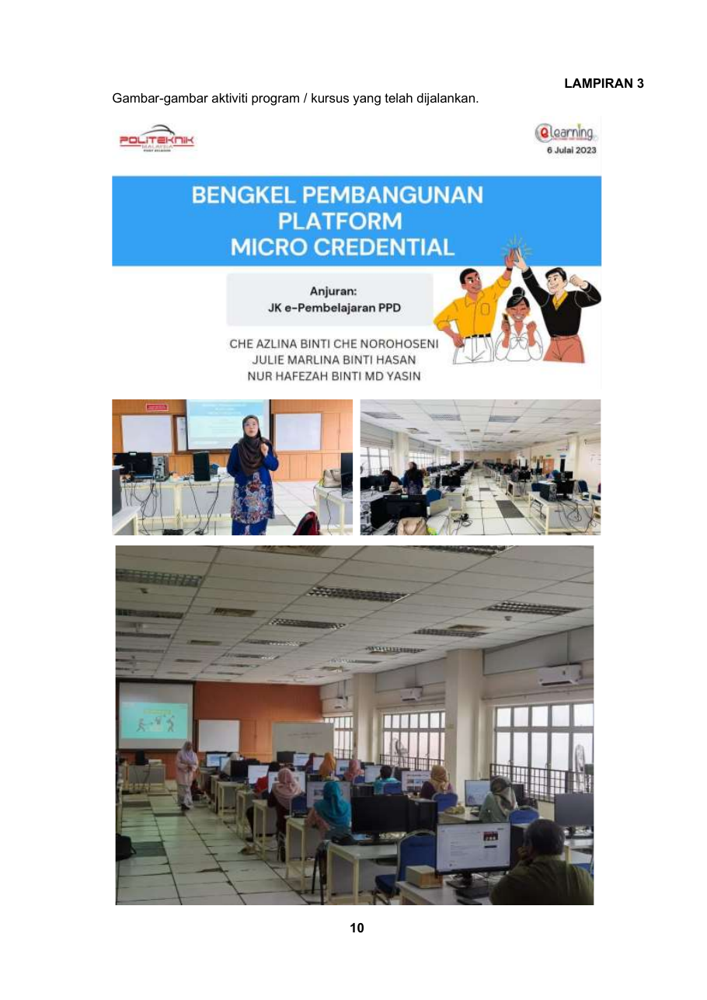
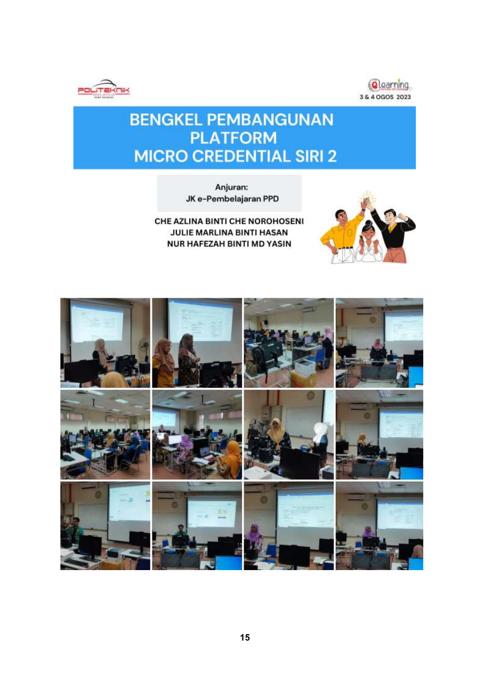
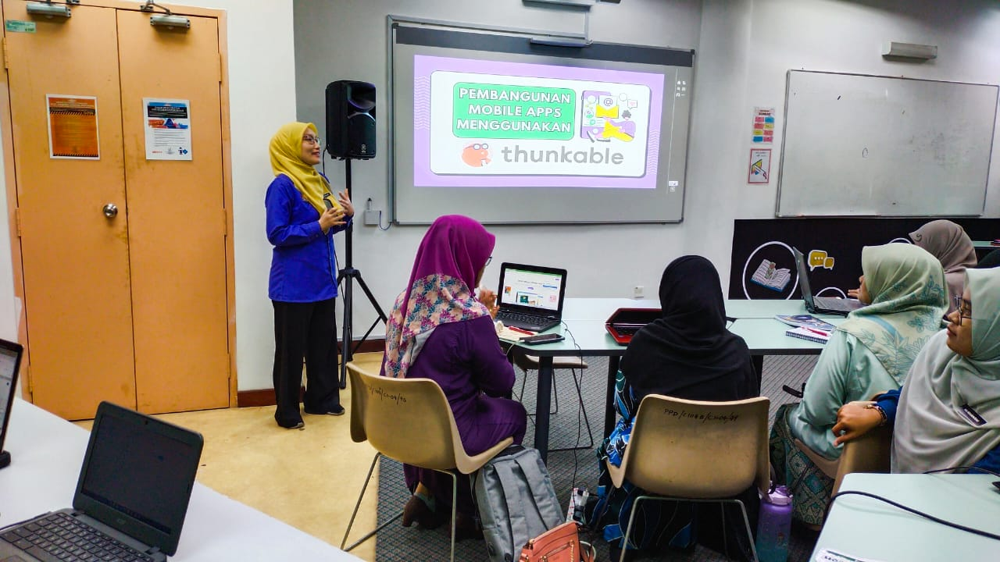
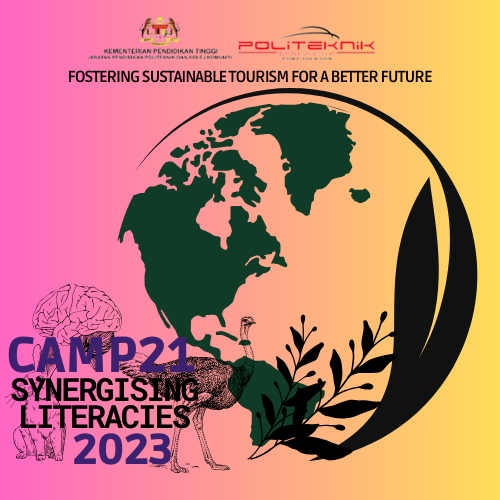
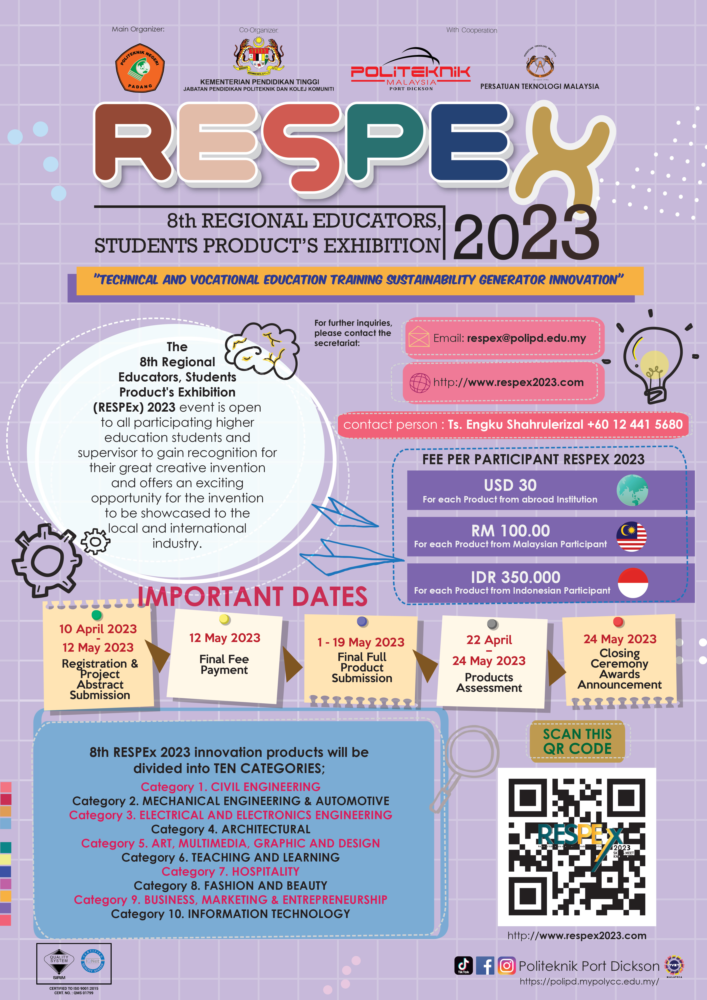

EDUCATOR
English communication, TVET context, learner-centred development.
Designing learning. Building possibilities. Creating meaningful educational impact.
Enter My Journey →
English communication, TVET context, learner-centred development.
Learning experiences, curriculum architecture and digital assessment.
Professional capacity building and educator upskilling.
Classroom challenges translated into practical educational tools.
03 / MY PROFESSIONAL JOURNEY
2022 was about creating. In 2023, the work began to travel further - through training, facilitation, institutional contribution and scholarship.

01 / THE SHIFT
The strongest 2023 records show a clear change in scale. I was not only developing ideas for my own teaching; I was increasingly helping other educators build, present, facilitate and document learning.
That movement can be read through five connected verbs.
FLAGSHIP STORY / CAPACITY BUILDING
PEMBANGUNAN PLATFORM MICRO CREDENTIAL · PPD · 2023
This was more than a one-off workshop. The 2023 implementation report records a year-long development cycle involving workshops, platform review and expert-panel checking.
The final report names Julie Marlina binti Hasan as Master Trainer and Ketua Penyelaras Pembangunan Platform MC.
The programme exposed lecturers to Micro-Credentials, identified 18 potential courses, supported draft PdP development and guided hands-on platform structuring.
For this portfolio, the significance is the shift in professional role: knowledge was being organised so that other educators could build with it.


VERIFIEDDIGITAL KNOWLEDGE SHARING / 14 JUNE 2023
KURSUS PEMBANGUNAN APPS MENGGUNAKAN APLIKASI THUNKABLE · PSH
The speaker record identifies me as Penceramah for the full-day PSH course on 14 June 2023. The photographs in Drive show the workshop in action: participants working on laptops while I facilitate mobile-app development using Thunkable.

AUTHENTIC WORKSHOP PHOTOS · 2023
IMAGE SOURCES: CAMP21 2023 DRIVE FOLDER03 / FACILITATE · 25-27 SEPTEMBER 2023
SYNERGIZING LITERACIES · FOSTERING SUSTAINABLE TOURISM FOR A BETTER FUTURE
The official appointment letter places the programme under Bahagian Kurikulum, JPPKK in collaboration with Jabatan Pengajian Am, Politeknik Port Dickson, involving students from Malaysian Polytechnics and Community Colleges.
Responsible for task information and group allocation for DT facilitators, monitoring facilitator involvement, and supporting the Lead DT Trainer with guidance throughout the programme.
The 2026 point is shown only as a later progression marker; this chapter remains focused on the verified 2023 role.
04 / FROM PRACTICE TO SCHOLARSHIP
In 2023, a classroom-and-community learning project became a published proceedings paper: “Community Involvement in an English Classroom of a TVET Institution in Malaysia: An Application of CDIO for Non-Engineering Program and Modified Design Thinking Model.”
The paper, co-authored by Susan S. Magallanes and Julie Marlina Hasan, documents a mini-pilot involving Commerce Department students, community-based learning, CDIO and a modified Design Thinking model. It was published in the proceedings of the 3rd International Conference on Community Engagement and Education for Sustainable Development.
CDIO · Community-Based Learning · ESL · Non-Engineering · TVET
Susan S Magallanes · Julie Marlina Hasan05 / AND I KEPT CONTRIBUTING
These records belong in 2023, but they should sit behind the flagship narrative rather than compete with it.

Drive contains a dedicated contribution record and working-committee sheet. The exact Julie-specific scope remains labelled for verification inside the evidence drawer.
2023 Drive records include the UKKP folder and an October 2023 NIOSH audit committee document.
An official 2023 committee appointment letter is available in Drive.
A March 2023 CSR record is present in Drive; role details should remain secondary until the source is fully extracted.
06 / EVIDENCE ROOM
Open a folder to inspect the source behind each 2023 story.
2023 is pre-DH12 professional journey. These records establish progression and context; they are not labelled as current-grade DH12 evidence.
07 / REFLECTION
2023 taught me that professional growth was not only about what I could design for my own learners. It was also about how I could structure experience, facilitate others, contribute to wider initiatives and turn practice into knowledge that could travel.
NEXT CHAPTER / STEP UP
Commencement of DH48 / DH12 Acting Appointment.
DH12 · CURRENT-GRADE EVIDENCE BEGINSThis view is the professional synthesis layer. Populate it only with verified progression and evidence anchors.